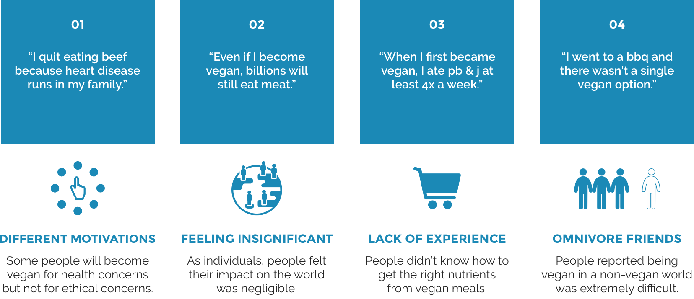
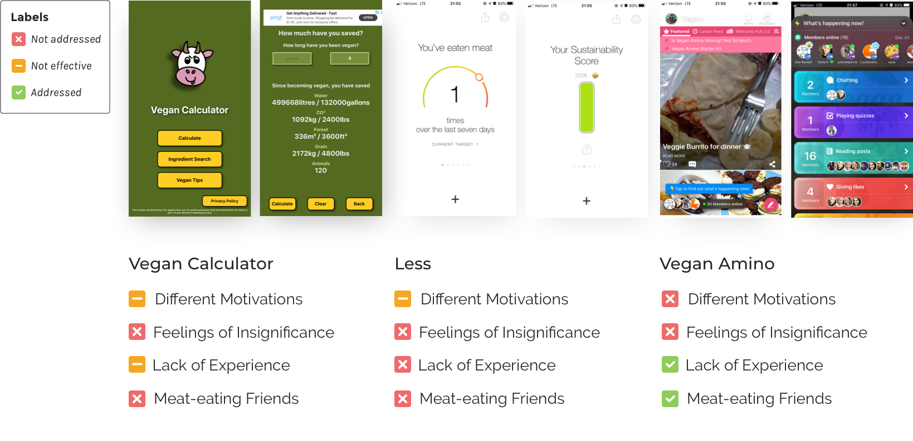

Role
Product Designer
Duration
5 months
Tools
Sketch, InVision
Type
Individual Side Project
As the sole product designer, I owned the entire design process from research through user testing to a high fidelity prototype.
The animal industry is the biggest contributor to climate change. This industry annually consumes ~65 trillion gallons of water, emits 18% of all greenhouse gases, and wreaks irreversible havoc on the Amazon. So what can I do as a product designer?
10 semi-structured interviews with 3 vegetarians and 7 omnivores.
I examined three mobile apps that aimed to help people eat less meat. I considered their key brand differentiators, weaknesses, strengths, and whether or not they addressed the four interview insights.
Taking insights from the interviews, I created 3 personas that represented the archetypes of the user group. Throughout the process, I turned back to the personas to make sure every design decision was looping back to user needs.

I then mapped out a journey map for each of my personas detailing their actions throughout the day and the potential emotions involved. The journey maps were extremely helpful in helping me visualize the personas' areas of frustration and create focal points in the problem space.

Clearly, helping people eliminate meat from their diet was not going to be an easy task. I tried to brainstorm as many ideas as I can during the ideation phase.

After considering all the possibilities, I did a pros & cons list for each feature idea and narrowed it down to four features.

Working out the user flow helped me get a rough idea about how I wanted to map out Thrive from onboarding to finish.
Working out the user flow helped me get a rough idea about how I wanted to map out Thrive from onboarding to finish.

Working out the user flow helped me get a rough idea about how I wanted to map out Thrive from onboarding to finish.

Working out the user flow helped me get a rough idea about how I wanted to map out Thrive from onboarding to finish.

Working out the user flow helped me get a rough idea about how I wanted to map out Thrive from onboarding to finish.


Working out the user flow helped me get a rough idea about how I wanted to map out Thrive from onboarding to finish.
Technology only amplifies underlying human forces. For technology to have positive impact, the right intent and capacity have to be there first. When designing for an app that is meant to encourage a lifestyle change, it does not mean include many features. Try only designing for the bare necessity for products to succeed.
Push myself further in visual design by thinking about the affordances on and transitions between the screens.
¬© 2020 Designed & Coded by üôãü誂Äç‚ôÄÔ∏è